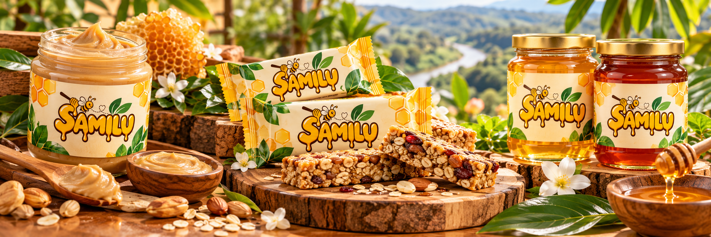
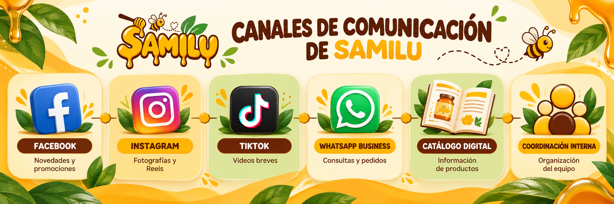
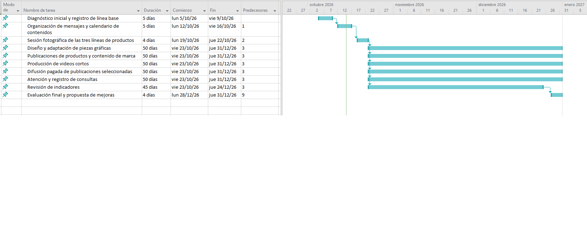
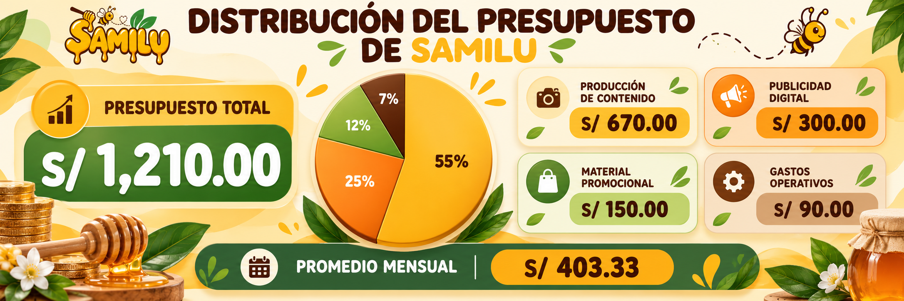
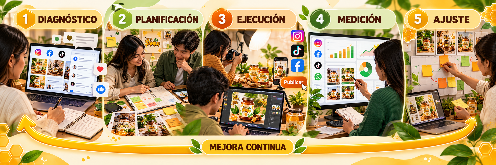

Sabor Amazónico, Miel y Luz S.A.C.
Marca comercial: SAMILU.

Plan de Comunicación Corporativa para organizar los mensajes, las acciones y los canales de SAMILU, acercando sus productos derivados de la miel al público de la Selva Central.
Explorar el plan
Sabor Amazónico, Miel y Luz S.A.C.
Datos principales y condiciones propuestas para organizar la comunicación corporativa de SAMILU.
Marca comercial: SAMILU.
Elaboración y venta de crema untable, barras energéticas y miel saborizada.
El origen regional forma parte de la identidad que se desea comunicar.
Periodo inicial para ejecutar acciones, revisar indicadores y proponer mejoras.
Coordinación de contenidos, aprobaciones, publicaciones y atención de consultas.
Planificación de mensajes, recursos y acciones para reforzar la presencia de la marca.
La duración, la distribución de funciones y las metas son una simulación de planificación académica para el proyecto SAMILU.
El plan convierte la identidad de SAMILU en una comunicación organizada y reconocible.
El Plan de Comunicación Corporativa de SAMILU organiza las estrategias, acciones, canales y mensajes dirigidos al equipo de trabajo, los clientes y el público interesado en sus productos.
Durante un periodo inicial de tres meses, la marca desarrollará una comunicación cercana, amigable y sencilla, presentando la crema untable, las barras energéticas y la miel saborizada mediante contenidos visuales y mensajes coherentes con su vínculo con la Selva Central.

Escenario inicial simulado para identificar qué conviene organizar antes de ejecutar el plan.
Para mantener mensajes uniformes, el equipo necesita contar con información actualizada sobre productos, precios, promociones, disponibilidad y formas de atención.
La comunicación externa debe presentar de forma constante las distintas líneas de productos y mantener una identidad gráfica coherente en los canales seleccionados.
Pasar de publicaciones y materiales aislados a una comunicación planificada, constante y evaluable.
Matriz inicial de factores que pueden influir en la comunicación corporativa de SAMILU.
FODA elaborado para la simulación del plan. Las debilidades y amenazas se consideran puntos de partida para planificar, no resultados de una auditoría formal.
La comunicación se adapta a las necesidades de las personas que reciben, comparten o gestionan la información de SAMILU.
Administración, producción y personal que participa en la atención o comercialización.
Necesita: coordinación, información actualizada y criterios de atención compartidos.Jóvenes y adultos de 18 a 50 años, principalmente de la Selva Central y otras zonas del Perú.
Necesita: información clara sobre productos, presentaciones, precios y formas de contacto.Personas y negocios con los que SAMILU pueda relacionarse en su entorno comercial.
Necesita: mensajes consistentes sobre la marca, su actividad y su vínculo regional.Objetivos planteados para el periodo de ejecución de doce semanas.
Fortalecer la comunicación corporativa interna y externa de SAMILU durante tres meses mediante una planificación organizada de mensajes, contenidos y canales que contribuya al reconocimiento de la marca y a la difusión de sus productos derivados de la miel.
Definir responsables, un calendario editorial y un procedimiento común para revisar la información antes de publicarla.
Producir aproximadamente 12 contenidos mensuales, combinando piezas gráficas y videos cortos.
Proponer como meta un incremento del 15% mensual en interacciones respecto de la línea base registrada al inicio.
Comunicar las tres líneas de productos y evaluar una meta de crecimiento del 20% en ventas de promociones seleccionadas frente al periodo de comparación.
Registrar mensualmente publicaciones, consultas, tiempos de respuesta e interacción para orientar los ajustes.
Se retoman los elementos ya definidos en Imagen Corporativa y se convierten en criterios prácticos para comunicar.
Los mensajes deben utilizar el imagotipo oficial y respetar la paleta de amarillo miel, naranja cálido, marrón oscuro y verde natural. No es necesario repetir aquí el proceso de diseño, la anatomía del logotipo o las reglas completas del manual de identidad.
Los canales se seleccionan por su utilidad para presentar productos, resolver consultas y coordinar la comunicación.
| Canal | Público principal | Finalidad dentro del plan |
|---|---|---|
| Público general, familias y clientes potenciales. | Compartir novedades, información de productos, promociones y publicaciones de marca. | |
| Jóvenes y adultos interesados en propuestas visuales. | Mostrar fotografías de productos, piezas gráficas, Reels y presentaciones. | |
| TikTok | Público que consume videos breves. | Difundir videos dinámicos de productos y contenido informativo relacionado con la marca. |
| WhatsApp Business | Personas que consultan o desean comprar. | Atender preguntas, compartir información o catálogo y coordinar pedidos, si la empresa habilita el canal. |
| Página web o catálogo digital | Clientes actuales y potenciales. | Reunir información sobre empresa, productos, presentaciones y medios de contacto. |
| Material impreso | Clientes y aliados en actividades presenciales. | Apoyar la presentación de productos con volantes y piezas informativas. |
| Coordinación interna | Administración y personas involucradas en el plan. | Compartir avisos, validar información y coordinar la publicación de contenidos. |

Acciones, frecuencia y responsables propuestos para ejecutar los objetivos durante el trimestre.
| Acción | Canal o recurso | Frecuencia propuesta | Responsable sugerido |
|---|---|---|---|
| Diseñar piezas gráficas de productos y marca. | Instagram, Facebook y catálogo. | 10 diseños al mes. | Diseño / comunicación. |
| Publicar contenido sobre productos y presentaciones. | Redes sociales. | Según calendario; en promedio 2–3 publicaciones semanales. | Comunicación. |
| Grabar y editar videos cortos. | TikTok y Reels. | 2 videos al mes. | Producción de contenido. |
| Difundir una promoción seleccionada, con condiciones claras. | Redes sociales y canal directo habilitado. | Según campaña planificada. | Marketing / administración. |
| Responder preguntas sobre productos y pedidos. | Canales oficiales habilitados. | Durante el horario de atención. | Atención al cliente. |
| Revisar información, precios y piezas antes de publicarlas. | Revisión interna. | Antes de cada publicación y cuando haya cambios. | Administración / responsable de comunicación. |
| Revisar los indicadores y registrar aprendizajes. | Hoja de seguimiento. | Mensual. | Responsable de comunicación. |
Se proyectan 10 diseños mensuales para mantener una biblioteca visual coherente y reutilizable.
Dos videos mensuales permitirán alternar el contenido estático con formatos breves y dinámicos.
El cronograma distribuye la preparación, publicación y evaluación a lo largo de doce semanas.
| Actividad | Mes 1 | Mes 2 | Mes 3 |
|---|---|---|---|
| Diagnóstico inicial y registro de línea base | ● | ||
| Organización de mensajes y calendario de contenidos | ● | ||
| Sesión fotográfica de las tres líneas de productos | ● | ||
| Diseño y adaptación de piezas gráficas | ● | ● | ● |
| Publicaciones de productos y contenido de marca | ● | ● | ● |
| Producción de videos cortos | ● | ● | ● |
| Difusión pagada de publicaciones seleccionadas | ● | ● | ● |
| Atención y registro de consultas | ● | ● | ● |
| Revisión de indicadores | ● | ● | ● |
| Evaluación final y propuesta de mejoras | ● |
Diagnóstico, línea base, fotografías y calendario.
Publicar, atender consultas y revisar los primeros resultados.
Mantener las acciones, comparar indicadores y proponer ajustes.

Estimación simulada de los recursos necesarios para ejecutar las acciones de comunicación durante tres meses.
| Concepto / actividad | Cantidad y cálculo | Costo estimado |
|---|---|---|
| Diseño de piezas gráficas para redes sociales Material visual para las publicaciones del trimestre. |
3 paquetes de 10 diseños × S/ 80 | S/ 240.00 |
| Sesión fotográfica de productos Imágenes de crema untable, barras energéticas y miel saborizada. |
1 sesión fotográfica básica. | S/ 250.00 |
| Grabación y edición básica de videos cortos Contenido para TikTok y Reels. |
6 videos × S/ 30 | S/ 180.00 |
| Publicidad pagada en Facebook e Instagram Difusión de publicaciones seleccionadas. |
S/ 100 mensuales × 3 meses | S/ 300.00 |
| Impresión de material promocional Lote pequeño de volantes y piezas informativas. |
1 lote de impresión básico. | S/ 150.00 |
| Movilidad, utilería y gastos operativos Traslados puntuales y preparación de contenido. |
Reserva para gastos complementarios. | S/ 90.00 |
| TOTAL PRESUPUESTADO | S/ 1,210.00 | |
Producción de contenido
Diseños, fotografías y videos.
Publicidad digital
Inversión en anuncios durante tres meses.
Material promocional
Impresión de piezas informativas.
Gastos operativos
Movilidad y utilería básica.
Plan de Comunicación Corporativa · 3 meses
Es el promedio de la inversión trimestral; el gasto real puede variar según el momento en que se realice cada actividad.

La estimación se relaciona con las cantidades de trabajo y las actividades previstas para el trimestre.
Los 30 diseños, la sesión fotográfica y los 6 videos proporcionan material reutilizable para comunicar las tres líneas de productos durante el trimestre.
La inversión de S/ 100 mensuales distribuye el gasto publicitario durante los tres meses, en vez de concentrarlo en una sola campaña.
El escenario considera una sesión fotográfica sencilla, edición básica de videos y una tirada pequeña de material impreso; no incluye una producción audiovisual de gran escala.
Se supone que SAMILU dispone de celular o equipo básico y una persona que coordina la comunicación. No se incluye un sueldo mensual de community manager ni la fabricación de los productos.
Nota: los importes son estimaciones simuladas para fines académicos, no gastos ya ejecutados ni cotizaciones formalizadas. Los precios definitivos dependerán de los proveedores, el alcance contratado y la disponibilidad de recursos.
Los indicadores permiten comprobar el cumplimiento del plan y decidir qué conviene ajustar.
| Indicador | Meta simulada | Método de verificación |
|---|---|---|
| Producción de contenido | 12 piezas mensuales: 10 diseños y 2 videos. | Calendario editorial y registro de publicaciones. |
| Interacciones digitales | Incremento propuesto del 15% mensual frente a la línea base. | Comparación de interacciones en las estadísticas de cada plataforma. |
| Tiempo de respuesta | Responder el 90% de consultas dentro de 15 minutos durante el horario de atención. | Registro de mensajes y respuestas en los canales habilitados. |
| Ventas promocionales | Incremento propuesto del 20% al cierre del trimestre en promociones seleccionadas. | Registro de pedidos y ventas comparado con el periodo base. |
| Cumplimiento del calendario | Realizar al menos el 90% de las publicaciones programadas. | Comparación entre publicaciones planificadas y realizadas. |
Durante el primer mes se registran las métricas disponibles para conocer el punto de partida antes de comparar porcentajes.
Los resultados se contrastan con las metas propuestas. Las cifras de la tabla son objetivos de la simulación, no resultados obtenidos.
El plan funciona como un ciclo que recoge información, actúa, mide y se adapta según los resultados observados.
Revisar consultas, comentarios y situación de los canales.
Definir mensajes, formatos, calendario y responsables.
Diseñar, publicar, atender y mantener la información actualizada.
Comparar publicaciones, interacciones, consultas e indicadores.
Corregir mensajes y mejorar las acciones del siguiente ciclo.

Ejemplo simulado de cómo las etapas del modelo pueden resolver una necesidad de comunicación relacionada con los productos.
| Fase | Mecanismo de acción | Ejemplo aplicado a SAMILU |
|---|---|---|
| 1. Diagnóstico continuo | Registrar preguntas, dudas y comentarios recurrentes. | Se identifica que el público solicita información más clara sobre las presentaciones de crema untable, barras energéticas y miel saborizada. |
| 2. Ajuste estratégico | Actualizar las fichas, descripciones y piezas gráficas. | Se prepara una publicación comparativa que explica las presentaciones y características confirmadas de cada producto. |
| 3. Ejecución focalizada | Publicar el contenido y compartir la información con quienes atienden consultas. | La pieza se difunde en los canales seleccionados y se utiliza como referencia para responder preguntas. |
| 4. Control y medición | Comparar consultas, interacciones y pedidos antes y después de la publicación. | Se revisa si disminuyen las preguntas repetidas y si aumenta el interés medible por los productos; no se presupone el resultado. |
| 5. Aprendizaje organizacional | Registrar los cambios y conservar las prácticas útiles. | La información validada se integra al catálogo y se usa como referencia para futuras publicaciones. |
Que los mensajes de SAMILU sean más claros, coherentes y útiles, y que cada ajuste se base en las consultas y métricas registradas.
Al finalizar la semana 12, la revisión de los indicadores servirá para definir las mejoras del siguiente periodo.
Consolidar el calendario de publicaciones, estadísticas de redes, consultas atendidas y registros de promociones disponibles.
Contrastar los datos del periodo con la línea base y las metas simuladas definidas en los KPI.
Determinar qué tipos de contenido generaron mayor interés, qué preguntas siguen repitiéndose y qué actividades no se cumplieron.
Actualizar el calendario, ajustar los mensajes, reforzar la información de productos y reasignar recursos si fuera necesario.
Resumen de actividades ejecutadas, indicadores, dificultades, aprendizajes y acciones recomendadas para el próximo ciclo.
Las decisiones se toman según los resultados registrados, la disponibilidad de recursos y la coherencia con los objetivos de SAMILU.
Administración y la persona responsable de comunicación revisarán el plan y documentarán las acciones que convenga mantener, corregir o reprogramar.
Coherencia en cada mensaje, cercanía en cada conversación y mejora continua en cada acción.
Volver al inicio ↑